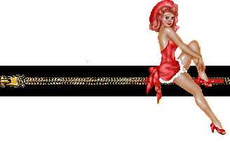
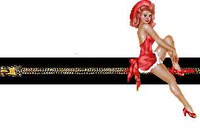
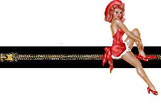

Made by
Seth Kranzler
THE TWENTY-SIXTH DAY
In that nothing was more delicious than meting out punishments, in that nothing prepared the way for so many pleasures, and those very sorts of pleasures Messieurs had mutually promised not to taste until in the stories mention thereof should permit fullest indulgence in them, the libertines sought by every imaginable means to trip the subjects into states of delinquency, and so procure themselves the joy of chastising their hapless victims; to this end, the friends, having convoked an extraordinary assembly that morning, their purpose being to deliberate upon this problem, they added several articles to the household regulations, infraction of which was necessarily to occasion punishment
Firstly, the wives, the small boys, and the girls were expressly forbidden to fart anywhere save in the friends' mouths
Instantly they were seized by the desire to break wind, they were without delay to go and find one of the friends and administer unto him what required to be set at large; a severe afflictive penalty would be the reward for disobedience
"Secondly, the use of bidets and ass-wipings of any kind were absolutely outlawed; it was generally proclaimed that all subjects without exception would hereafter never wash themselves, and never under any circumstances wipe the ass after having shitted; that, whenever an ass were found clean, upon the subject concerned would lie the burden of proving it had been licked clean by one of the friends, and that friend would have to be mentioned by name"
In response to which citation, the friend would be questioned, and, being in a position to procure himself two pleasures, instead of only one, to wit: that of having cleaned the ass with his tongue, and that of having punished the subject who had afforded him this first pleasure… Examples of this will be provided
"Thirdly, a new ceremony was introduced: at the time of the morning coffee, at the time of their entry into the girls' quarters, and also when, after that, they passed into the boys', each of the subjects would hereafter, one by one, step forth and, in a loud and clear voice, say to each of the friends: "I don't care a fuck for God; there's shit in my ass, would you like some?" and those who should fail in an intelligible voice to pronounce both the blasphemy and the invitation, would instantly be inscribed in the dread book"
The reader will readily imagine what difficulties the pious Adelaide and her young pupil Sophie had to surmount before being able to utter such infamies, and their inner struggles procured Messieurs some excellent entertainment
""
The foregoing once framed in law, they turned to consider delations and decided to admit them; this barbarous means of multiplying vexations, accepted by every tyrant, was warmly embraced by these
It was decided, fourthly, that every subject who should lodge complaint against some other, would thereby earn a one-half reduction of the punishment he was to suffer for the next fault he committed
Messieurs were in no way deprived by this system, because the subject who had just accused another subject could never know the extent of the punishment a half of which,
"he was promised, would be suppressed; and so it was a simple matter indeed to give him precisely what one wished to give him, and still to persuade him he had got off more lightly than otherwise he might"
Messieurs agreed upon and published their decision, that no delation required substantiating proof in order to be believed, and that, to be inscribed, accusation brought by anyone would suffice
The duennas' authority, furthermore, was increased, and upon the basis of their slightest complaint, whether true or false, the subject would be condemned immediately
In a word, over this small population they established all the vexation, all the injustice one could imagine, certain in the belief that the more harshly their tyranny was exercised, the greater the sum of pleasures they would derive from their privileged situation
All this legislation composed and voted, they visited the chamber pots
"Colombe was found guilty; her excuses hinged upon the food they had made her eat between meals the day before; she had, said she, been unable to resist, she was dreadfully unhappy about the whole thing, and this was the fourth successive week she had been punished"
The statement was true, and she had only to blame her ass, which was the freshest, the sweetest, the best-made and most endearing little ass you could hope to see
She pointed out she'd not wiped herself, and that, she supposed, should be regarded as a point in her favor
Durcet examined her, and having indeed discovered a very thick and very broad patch of shit, he assured her that, in the light of this, she'd be treated a little less rigorously
Curval, stiff at the time, laid hands on her, and having completely cleaned her anus, he had her produce her turd and ate it while having her frig him, periodically interrupting his chewing to kiss her upon the mouth and to order her to swallow, in her turn, what of her own creation he brought to her lips
They next inspected Augustine and Sophie, who had been solemnly enjoined, after the stools they had yielded up the night before, to remain in the most impure state
Sophie's appearance conformed with her instructions, even though she had slept in the Bishop's chamber, but Augustine was as neat as a pin
Sure of her reply, she advanced proudly and said that they knew very well she had, as was her custom, lain the night in Monsieur le Duc's bedchamber, and that before going to sleep he had summoned her to his bed, where he had licked her asshole while she had frigged his prick in her mouth
When interrogated, the Duc said that he had no remembrance of the thing (although the story was completely true), that he had fallen asleep with his prick in Duclos' ass, that they could substantiate the fact
They went about the matter with all possible seriousness and gravity, they sent for Duclos who, seeing clearly what was afoot, lent her support to everything the Duc advanced, and maintained that Augustine had been called to Monsieur's bed only for a brief instant, that Monsieur had shitted into Augustine's mouth and then, upon second thought, had bade her return to the bed in order that he might eat his turd
Augustine sought to defend her thesis and dispute Duclos' contentions, but silence was imposed upon her and, although perfectly innocent, her name was written down
""
Amongst the boys, whose chambers they visited next, Cupidon was found guilty; he had done the world's most gorgeous turd in his chamber pot
The Duc snatched it up and gobbled it up while the young malefactor sucked his member
All requests for chapel permissions were refused; they then went to dine
The beautiful Constance, whom they sometimes dispensed from serving at table because of her state, was however feeling fit that day, and made her appearance naked; the sight of her belly, which was beginning somewhat to swell, made Curval's head very hot; the others, seeing his treatment of the poor creature's buttocks and breasts growing rather rough—Curval's horror for her was doubling every day, that was plain—were swayed by her entreaties and their common desire to preserve her fruit, at least until a certain date, and she was allowed to absent herself from all the day's functions, save for the narrations, wherefrom she was never excused
Curval started in again with his frightful speeches about child-breeders, he declared that if he had government of the country he would borrow their law from the inhabitants of Formosa, where pregnant women under thirty are, together with their fruit, ground in a large mortar; should that law, he protested, be introduced into France, the population would still be twice what it ought to be
Coffee came next; it was presented by Sophie, Fanny, Zélamir, and Adonis, but served in a passing strange manner: 'twas in the children's mouths, one had to sip it therefrom
Sophie served hers to the Duc, Fanny Curval's, Zélamir the Bishop's, and Durcet got his out of Adonis
"They extracted a mouthful, gargled it a moment, and returned it into the mouths of those who'd served them"
Curval, who had risen from the table in a great ferment, got stiff all over again thanks to this ceremony, and when it had been completed, he laid hands on Fanny and discharged into her mouth, ordering her to swallow the whey; the threats accompanying his instructions succeeded in making the poor wretch obey without the flutter of an eyelash
"The Duc and his two other confreres collected shit or farts; having finished their nap, they all trooped in to listen to Duclos, who spoke to them in this wise:"
I will move with dispatch, said that amiable girl , through my last two adventures concerning these unusual men who find their delight only in the pain they are made to undergo, and then with your leave we will pass on to a different variety
The first, while he had me frig him, naked and standing up, wanted floods of hot water poured down on us through an opening in the ceiling; our bodies were to be showered during the entire operation
It was quite in vain I argued that, while not sharing in this passion of his, I was nevertheless, like himself, to be a victim of it; he replied, assuring me I would suffer no hurt from the experience, and that these showers were good for one's health
I believed him and let him
have his way; as this scene transpired in his house, the temperature of the water, a critical detail, was something lying beyond my control
It was indeed nearly boiling
Messieurs, there is no conceiving the pleasure he felt upon being drenched by it
As for myself, all the while operating with all possible speed, I screeched, yes, I confess it, I screeched like a drowning tomcat; my skin came peeling off, and I made myself the firm promise never to return to that man's house
"Ah, buggerfuck!" exclaimed the Duc, "I have the strongest inclination to give the beauteous Aline a comparable scalding
"
"Your Grace," the latter replied in a humble but decided tone, "I am not a tomcat
"
And the naive candor in her childlike reply having fetched a chuckle from everyone, Duclos was asked to give the second and final example of the same genre
It was a great deal less painful for me, said Duclos; I had simply to don a stout glove, then with this protected hand to take burning grit from a frying pan I'd been heating on a stove, and, my hand filled, to rub that fiery sand over my man's body, from head to toe
His body was so inured to this exercise that he seemed to be covered not with skin, but with leather
When one reached his prick, one had to seize it and massage it in a handful of that same sand; he'd be up like a shot
"Then, with the other hand, I placed a small fire shovel, heated red-hot for this purpose, under his balls"
This rubbing with one hand, the consuming heat which rose to bake his testicles, perhaps a little touching of my two buttocks, which I had to keep well exposed and within reach during the operation, this combination of elements melted him altogether and he discharged, being very careful to spill his seed upon the hot shovel where, to his unutterable delight, he watched it sizzle and evaporate in steam
""
"Curval," said the Duc, "there's a man who, 'twould appear to me, has no greater fondness than have you for population
"
"It looks that way to me," Curval assented; "I make no bones about the fact I love the idea of watching fuck burn
"
""Oh, I know all the ideas fuck inspires in you," said the Duc with a hearty laugh"
"And even were the seed to ripen, the egg to hatch, you'd perform a combustion with the same pleasure, wouldn't you?"
""Upon my soul, I do fear I would," said Curval, as he did I know not what to Adelaide that brought"
"a loud scream from her lips"
"And who the devil do you think you are dealing with, whore?" Curval demanded of his daughter
""What are these chirpings and squallings all about? Remember the company you are in"
Can't you see that the Duc's trying to talk to me of burning, provoking, instilling good manners into hatched fuck, and what are you, pray tell me, but a little something hatched out of my balls' fuck?
Duclos, I say, continue, if you please," Curval added, "for I have the feeling this bitch's tears might make me discharge
And I'd prefer not to
"
And here we are, said our heroine, come to details which, bringing with them characters of a more singular piquancy, will perhaps please you more
"You know of course that in Paris we have the custom of exposing the dead before the doors of houses"
"There was a particular gentleman, well placed in society, who used to pay me twelve francs for every one of these lugubrious objects to which, in a given evening, I could lead him; his whole delight consisted in going up with me as near to them as possible, to the very edge of the coffin if we were able, and once we had posted ourselves there, I had to frig him in such wise his fuck would shoot out upon the coffin"
We used to run from one to another, would often pay our respects to three or four in an evening; it all depended upon the number I had located for him in advance, and we performed the same operation beside each of them; he never touched anything but my behind while I toiled over his prick
"He was a man of about thirty, and I had his trade for at least ten years"
I'm sure that, during the period of our collaboration, I made him discharge upon more than two thousand coffins
"But would he not say something during the rite?" inquired the Duc
"Did he not speak either to you or to the corpse?"
""He would shower invectives upon the deceased," Duclos replied; for example: 'Here, you rascal, here, take it, you villain, you bugger, take my fuck along with you to hell"
'"
""A very unusual mania, that one," Curval commented"
""
"My friend," said the Duc, "you can be certain that man was one of our own sort, and that he surely did not stop at that
"""
""You are quite right, my Lord," spoke up Martaine, "and I shall have occasion to bring that actor back upon the stage"
"
Taking advantage of the silence which succeeded Martaine's interjection, Duclos went on
"Another one, said she, carrying a more or less similar fantasy a good deal further, wanted me to keep spies on the watch near the cemeteries and to bring in word every time there was a burial of some young girl whose death had been caused by anything but a dangerous disease—he was very emphatic upon that point"
"As soon as I had got wind of something suitable, and he always paid me very handsomely for those discoveries, we would set off after sundown, enter the cemetery by one means or another, and heading at once for the grave our informant had indicated, above which the earth had only recently been broken, we would both fall to work, dig down to the cadaver, and when once we'd uncovered it, I'd frig him over it while he spent his time handling it and, above all, if 'twere possible, its buttocks"
If perchance, and it frequently occurred, he stiffened a second time, he'd therewith shit, and have me shit also, upon the corpse, and discharge thereupon, all the while palpating whatever parts of the body he could lay his hands on
"Oh, my, but that one does strike a response in me," said Curval, "and if I have to make my confession to you here and now, I'll assure you I've done the same thing from time to time
To be sure, I added a few little episodes I dare say our rules prevent me from describing at this point
Be that as it may, my prick's got monstrously fat; spread your thighs, Adelaide…"
And I've not the faintest idea what happened next; all we know is that the couch groaned beneath its burden, unmistakable sounds of a discharge pealed from the Président niche, and I am led to suppose that, very simply and very virtuously, his honor the judge had just committed incest
"Président," the Duc called over, "I'll wager you thought she was dead
"
"Why, indeed, that's true," said Curval, "else how in the world could I have discharged?"
And hearing not another word from the several alcoves, Duclos brought that evening's stories to a close with the following one:
Lest I leave you, Messieurs, with dark images and sad thoughts, I am going to conclude the soiree with the story of the Duc de Bonnefort's passion
That young lord, whom I amused five or six times, and who used frequently to see one of my close friends for the same operation, required a woman, armed with a dildo, to frig herself naked in his presence—to frig herself, I say, both before and behind and to keep it up for three hours without a moment's interruption
"He has a clock there to guide you, and if you drop the work before having completed the third hour, no payment for you"
He sits opposite you, he observes you, makes you turn this way, that way, some other way, exhorts you to ply the dildo more energetically, he would have you go out of your mind
with pleasure, and if indeed transported by the effects of the operation, you should really swoon away with delight, 'tis very certain you will hasten his
But if you keep your head, at the precise instant the clock strikes the third hour, up he gets, approaches you, and discharges in your face
"Truly," quoth the Bishop, "I fail to understand, Duclos, why you didn't prefer to leave us with those other images and thoughts rather than with this innocuous picture
They had some spice to them, some color, and excited us powerfully, whereas here we have some sort of milksop business which, now that the session is over, leaves us with nothing at all in our heads
"
""No, she did the right thing, insofar as I'm concerned," said Julie, who was lying with Durcet, "and I give her my warmest thanks"
We'll all be allowed to go to bed more peacefully now that they don't have all those frightful ideas in their heads
"""
"Ah, lovely Julie, you may be very gravely mistaken," said Durcet, "for I never remember anything but the earlier one when the later one displeases me; you doubt my word? why, then pray have the kindness to follow me
"
"And, together with Sophie and Michette, Durcet fled into his closet to discharge I don't know how, but none the less in a manner which must not have suited Sophie, for she uttered a piercing scream and emerged from the sanctuary as red as a cockscomb"
"Well," drawled the Duc, "you surely could not have wanted to confuse her with a corpse for that stunt; for you've just made her give out the most furious sign of life
"
""She was afraid, that's all," Durcet explained; "ask her what I did to her and make her tell you in a whisper"
"""
He sent Sophie to speak to the Duc
""
""Ah," said the latter aloud, "there's nothing in that either to warrant screams, or, for that matter, a discharge"
"""
"And because the supper call sounded, they suspended their conversation and their pleasures in order to go and enjoy those of the table"
The orgies were celebrated rather quietly, and Messieurs retired to bed in good order; not one of them had even the appearance of being drunk; and that was extremely unusual



 
